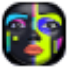

F
Face Swap AIРедактировать изображение
«Face Swap AI» меняет лицо в визуальном материале.
Раздел «Изображение → изображение»: варианты ИИ для этой задачи, описания возможностей и переходы к обзорам. Сравните несколько решений на одинаковом примере.
Создайте стилизованный вариант собственной фотографии для творческого проекта. Укажите технику и палитру, а также обязательные детали исходника; сравните положение персонажа, крупные предметы и композицию, чтобы стиль не заменил основной сюжет новой сценой.
Преобразуй мою фотографию прогулки в книжную акварельную иллюстрацию: мягкая охристая палитра, лёгкая бумажная фактура. Сохрани позу человека, форму зонта и расположение дорожки, без дополнительных персонажей.

«Face Swap AI» меняет лицо в визуальном материале.
«face swapper online» меняет лицо в визуальном материале.
«FilterPixel» помогает исправлять и оформлять фотографии.
«ImageCartoon» представлен в разделе «Редактировать изображение». При выборе проверьте нужную операцию и условия работы с результатом.
«Imageeditor» готовит визуальные материалы по заданию. Дополнительно «Imageeditor» помогает исправлять и оформлять фотографии.
«In3D» подготавливает трёхмерные объекты. «In3D» создаёт портретные и аватарные изображения.
«Recolorai» создаёт портретные и аватарные изображения.
Shotix создаёт стилизованные портреты по загруженным снимкам пользователя. В сервисе описаны анимация фотографии в видео и замена лица, а также восстановление старых изображений и аватары. Доступны веб-версия, приложение iOS и Telegram-бот для выбранного способа работы со снимками.
Stylar помогает создавать и редактировать изображения с участием ИИ. Инструменты включают управление композицией, помощь в дизайне и изменение фотографий через фильтры. Продукт ориентирован на графическую работу, где генерация визуального материала сочетается с настройкой его подачи и расположения элементов вместо одной общей операции над готовым кадром.
Сравнивать «The Multiverse AI» с другими инструментами раздела «Генерация изображений» удобнее на одинаковом исходном материале.
AnimeBuilder подготавливает аниме-варианты изображений с помощью ИИ и текстового ввода. Пользователь может выбирать из нескольких стилей обработки. Онлайн-инструмент связывает исходную картинку и описанный замысел, чтобы рассматривать выбранную визуальную подачу при создании стилизованного изображения по своему запросу.
«Architect Render» представлен в разделе «Генерация изображений». При выборе проверьте нужную операцию и условия работы с результатом.
«ArtblastAI» представлен в разделе «Генерация изображений». При выборе проверьте нужную операцию и условия работы с результатом.
«Fotobudka AI» представлен в разделе «Редактировать изображение». При выборе проверьте нужную операцию и условия работы с результатом.
Для «Guru Art Face Swap» сначала определите свою задачу и требуемый результат. Карточка относится к направлению «Редактировать изображение».
«Image Mixer» готовит визуальные материалы по заданию.
«Image Upscaler AI» представлен в разделе «Редактировать изображение». При выборе проверьте нужную операцию и условия работы с результатом.
«Image Variations» готовит визуальные материалы по заданию.
«Nero AI Image Upscaler» увеличивает изображения для дальнейшей обработки.
«NeuralPix» помогает исправлять и оформлять фотографии.
Сравнивать «NewProfilePic App» с другими инструментами раздела «Редактировать изображение» удобнее на одинаковом исходном материале.
Сравнивать «NVIDIA Canvas» с другими инструментами раздела «Генерация изображений» удобнее на одинаковом исходном материале.
«Petpic» добавляет движение исходной картинке. «Petpic» готовит визуальные материалы по заданию.
Petportrait создаёт портреты домашнего животного по его фотографиям с помощью глубокого обучения. Пользователь может выбирать художественный стиль и настраивать результат. Эти возможности относятся к подготовке изображения питомца, связывая исходные снимки с рассмотрением желаемого оформления в рамках выбранной портретной работы.

Photify AI создаёт варианты внешнего образа на основе загруженного селфи. Приложение позволяет экспериментировать с причёской, одеждой и гендерным представлением человека. Работа начинается с одной фотографии, которую ИИ использует для разных преобразований; инструмент предназначен для визуального примеривания образов в редакторе снимков.
Сравнивать «Replace Anything Online» с другими инструментами раздела «Редактировать изображение» удобнее на одинаковом исходном материале.
«Roast Dating» представлен в разделе «Редактировать изображение». При выборе проверьте нужную операцию и условия работы с результатом.
«Starving Robots AI» представлен в разделе «Редактировать изображение». При выборе проверьте нужную операцию и условия работы с результатом.
Waifu XL увеличивает изображения и GIF-файлы с участием ИИ. В инструменте предусмотрены параметры маркировки изображения и выбора детализации. Пользователь может рассматривать эти настройки при обработке исходного материала, подбирая вариант масштабирования для статичной картинки или анимированного файла в своём визуальном проекте.
«123RF AI Images» отделяет объект от фона изображения. Дополнительно «123RF AI Images» убирает выбранные объекты из визуального материала.
«Adobe Lightroom» помогает исправлять и оформлять фотографии.
«AICartoonGenerator» представлен в разделе «Арт». При выборе проверьте нужную операцию и условия работы с результатом.
Сравнивать «AIDrawing» с другими инструментами раздела «Изображения» удобнее на одинаковом исходном материале.
Avaturn помогает создавать трёхмерные аватары и менять их оформление. В инструменте предусмотрена анимация для игрового использования. Интеграции с веб-средой и движками Unity и Unreal дополняют подготовку персонажа, позволяя рассматривать модель и её движение в рамках выбранного проекта пользователя.
Для «Baby Maker Baby Face Generator» сначала определите свою задачу и требуемый результат. Карточка относится к направлению «Развлечения».
«Beard Style AI» представлен в разделе «Генерация изображений». При выборе проверьте нужную операцию и условия работы с результатом.
Botika создаёт визуальные материалы одежды с использованием цифровых моделей. Платформа преобразует фотографии товара в изображения для модного ассортимента средствами генеративного ИИ. Продукт предназначен для продавцов одежды, связывая исходный снимок изделия с его представлением на созданном модельном образе для дальнейшего оформления продажи.
Decoritt помогает подготавливать интерьерные решения с участием ИИ. Среди описанных возможностей есть визуализация в реальном времени и удаление мебели, а также изменение стиля комнаты. Пользователь может рассматривать варианты оформления, связывая обработку пространства с выбранным направлением домашнего дизайна.
«Deep Art Effects» помогает исправлять и оформлять фотографии.
Drawww представляет собой приложение для рисования на iPad с ИИ-генерацией изображений. В нём предусмотрены работа со слоями, настраиваемые художественные инструменты и форматы для обмена материалами. Пользователь может сочетать собственную работу над рисунком с генеративным направлением, организуя изображение и его дальнейшую передачу внутри приложения.
Сравнивать «Dreamcard AI» с другими инструментами раздела «Редактировать изображение» удобнее на одинаковом исходном материале.
«Facy AI Face Swap» увеличивает изображения для дальнейшей обработки. Дополнительно «Facy AI Face Swap» меняет лицо в визуальном материале.
«Final2x» представлен в разделе «Редактировать изображение». При выборе проверьте нужную операцию и условия работы с результатом.
«Fix Blurry Photos» помогает исправлять и оформлять фотографии.
«FotoMedley» представлен в разделе «Изображения». При выборе проверьте нужную операцию и условия работы с результатом.

В инструменте «insMind» можно собирать видеосцену по описанию или визуальному исходнику. Ещё одно направление работы: менять фотографии с учётом выбранного оформления.
«insMind Image Extender» представлен в разделе «Редактировать изображение». При выборе проверьте нужную операцию и условия работы с результатом.
«Interior Render AI» помогает представить оформление помещения.
Страница 4 из 7